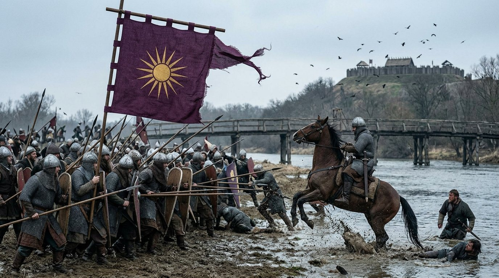
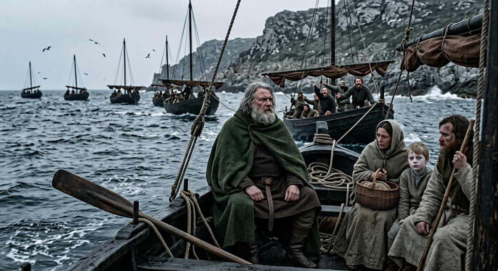
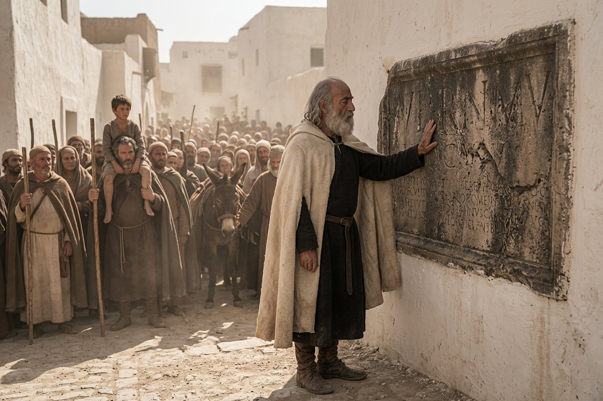
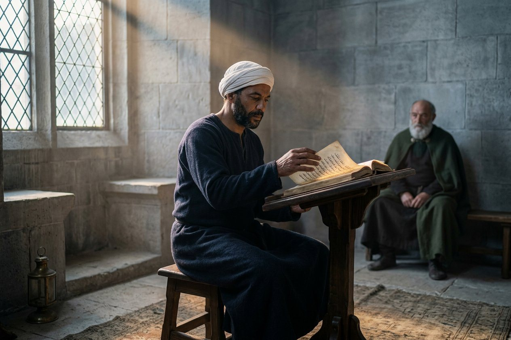
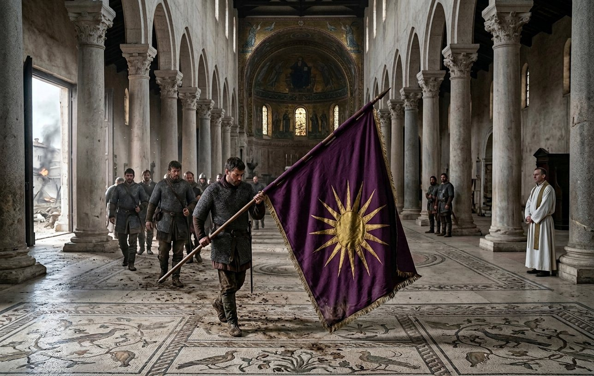
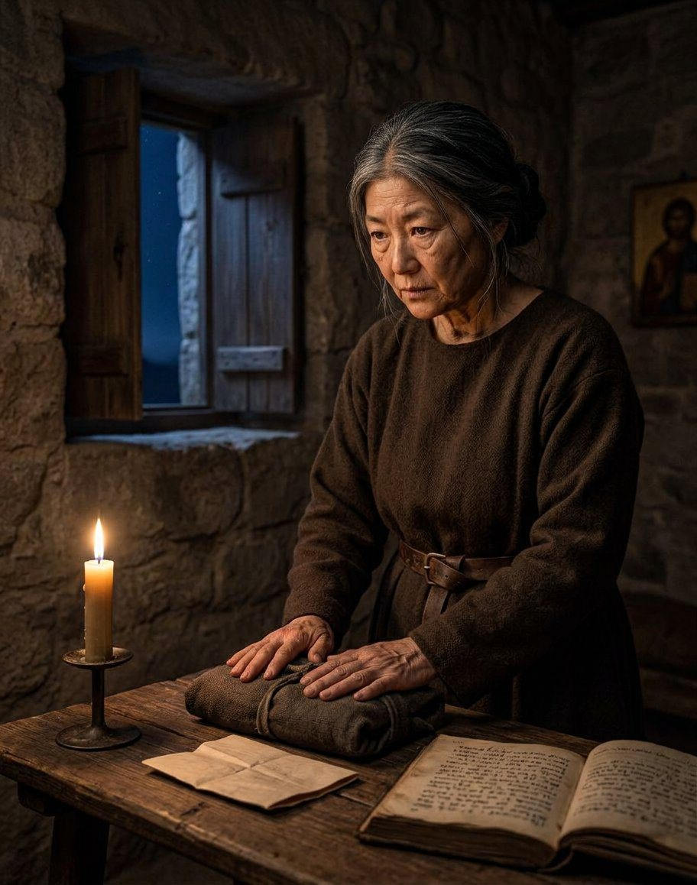
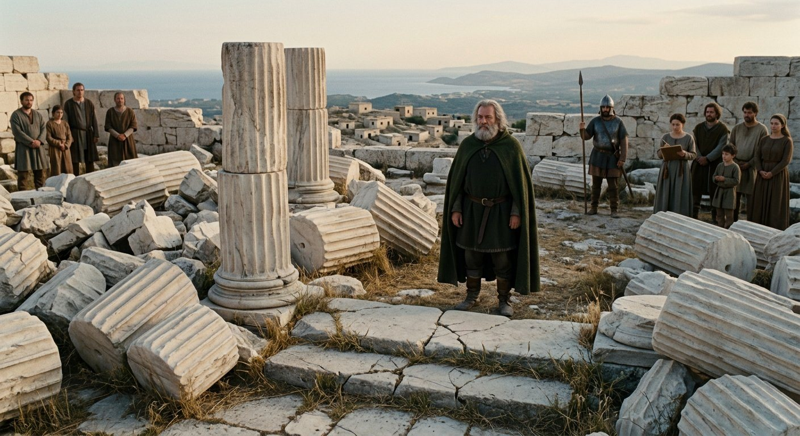
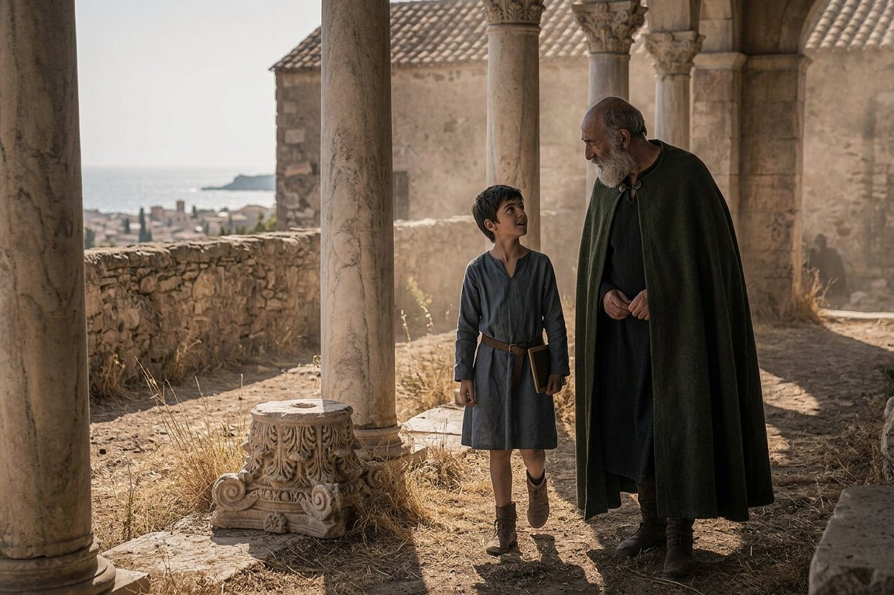
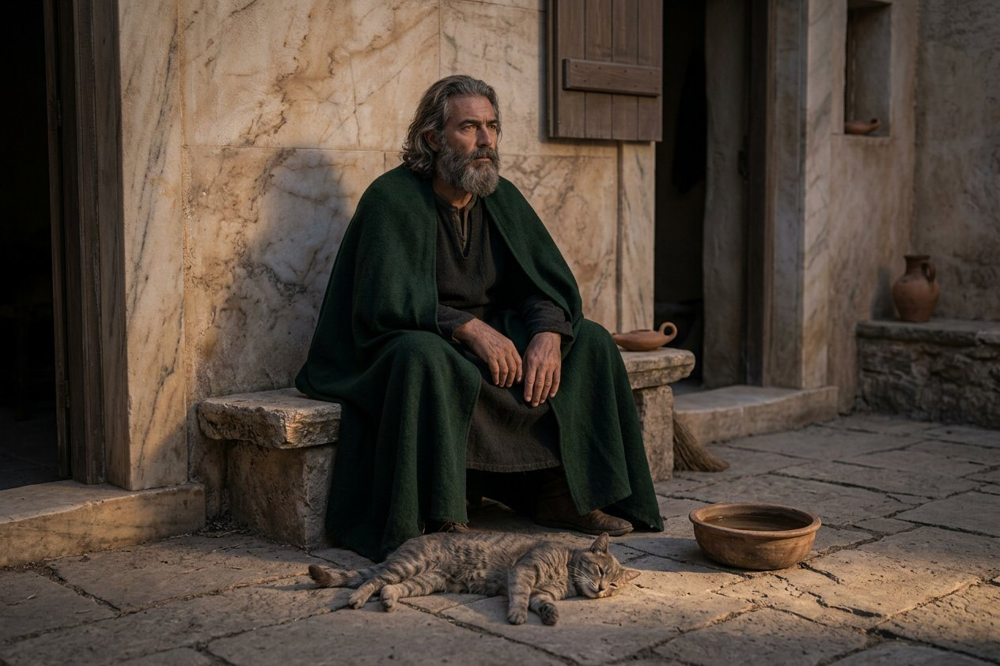
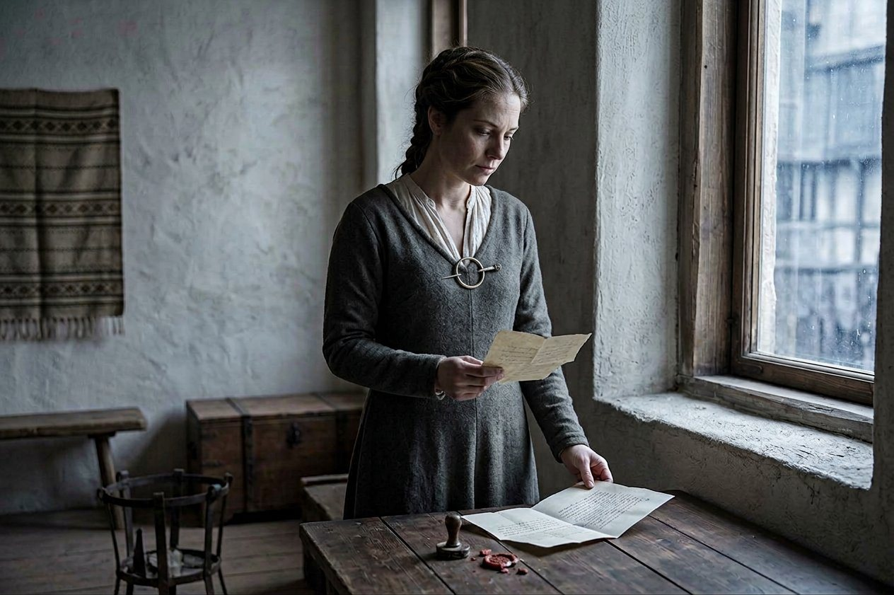

The two years, and where the King was in them
This chapter runs from the tournament at Győr to the eleventh month of 914, and it has more road in it than any chapter since the first volume, so I am going to begin with the arithmetic and then write the events in the order they happened.
Two years and three months, seven hundred and ninety-five days. He was out of Bavaria for five hundred and nineteen of them.
Two pilgrimages. Tunis, from the seventeenth day of the eleventh month of 912 to the first day of the seventh month of 913, which is two hundred and twenty-six days. Athens, from the twelfth day of the eleventh month of 913 to the first day of the ninth month of 914, which is two hundred and ninety-three.
And two wars. Slavonia, declared on the twenty-sixth day of the ninth month of 912 and finished in the ninth month of 913. Friuli, declared on the twenty-third day of the eighth month of 913 and finished in the fifth month of 914.
He commanded neither war. He was not within five hundred miles of any of its battles, and one of them was fought on a day when he was on the water south of Sardinia with me and eleven hundred other people, and I will come to that.
I have written in this book that a kingdom of arrangements can be run from a bed, and I have written that nobody was raising the heir. This chapter is the same argument at a larger size. In the two years after the tournament the machinery of Bavaria won a Slavonian war, annexed three counties, declared a second war the day after it had handed out the winnings of the first, took a patriarchal city, and gave away four lordships — and the King of Bavaria was at sea for two thirds of it, praying in Africa and then in Greece.
It is worth saying plainly, because no chronicle would: the thing worked. It worked because the men who ran it had been paid on time for sixteen years, and because the woman who kept the account of who was owed what was the one who kept it before me, and because there is a class of arrangements that stops needing a king the way a mill stops needing the miller once the water is in the channel.
That is not a compliment to the arrangements. A mill that runs without a miller runs until the first flood.
Sisak, and a second man called Pribunja
Fifteen days after he won the Recital at Győr, on the twenty-sixth day of the ninth month of 912, the kingdom declared war on the High Chiefdom of Slavonia.
The enemy was called Pribunja.
I am going to stop on that name, because this book has been bitten by it before and I would rather put the note in the page than in the margin. There was a Pribunja in the seventh chapter of this book. He was born in 850, the same year as the Captain, he was the father of the Queen of Bavaria, he hired five thousand men to save his daughter's crown, and he died at Hall in 906 — I have his seal on a parchment in the chest and I have written the date of his death in my own ledger.
The Pribunja of 912 is not that man. He is a lord of the Slavonian country beyond the Drave, the record gives his name and his title and nothing else, and I want the reader to understand that in a country where three men are called Gavril and three kings are called Ludwig, two lords called Pribunja in six years is not a marvel. It is a Tuesday.
What the record gives of the war is one line and three names: Sisak and Zagreb, on the first day of the second month of 913.
Two battles and one date. I have looked at that line for a long time and I cannot tell the reader whether two armies were broken in two places on the same day, which is what a general does when he has numbers, or whether some clerk in a chancery wrote two names because he could not decide which one to use. The record gives no numbers for either place, and this book gives none.
On the first day of the second month of 913, the King of Bavaria was on a ship somewhere south of Sardinia with a bad chest and a worse temper, and I was four feet from him, and I can tell the reader what the wind was doing and I cannot tell him one thing about Sisak.

That is what it is to be a king with a machine. The two most violent days of his year happened to him as a letter.
He read it at Tunis in the third month, and I watched him read it, and he said the thing he said at Servia in 910 when Bohemia was won without him, which is: good. And then, after a while: who commanded.
Nobody in the party could answer him. The dispatch named the two places and the two counts who held them afterwards and not the man who had taken them, and I have turned that over since and I think it is the most honest document in this chapter, because it is exactly how the thing worked: the kingdom now produces victories the way a mill produces flour, and no one writes down the name of the miller.
The sea road
We left Regensburg on the seventeenth day of the eleventh month of 912, seven weeks after the declaration, going south to the sea.
It was his first pilgrimage to Africa. The record says so in those words, as though a man's life were a list of continents he had prayed on, and in his case it is: Asia in his childhood, Europe for twenty-two years, and now Africa.
He did not go as a king. This is the one thing in the chapter I want to set down properly, because it is the only place in twenty-two years where I have seen him arrange his own circumstances to be smaller than they were.
He went as a pilgrim, in the dress of a pilgrim: a cloak of undyed wool over a dark tunic, a staff, a scrip, boots that had been resoled twice, nothing on his head, and no ring on his hand. I have written the wardrobe out because the reader has a right to see it. He left the crown in a chest in Regensburg with a count and two keys.
He did not leave the escort. Four hundred men came with him, and the lords insisted, and he did not argue, and the argument about that happened in a room I was not in and I have the shape of it from two men who were.
There were eleven hundred of us in the end: the household, the pilgrims who had attached themselves at Regensburg and Passau and Augsburg, the muleteers, the priests — three rites between them, which is a thing I will come back to — and a great many people who had heard that the King of Bavaria was going to Africa and had decided that this was the year they would go too.
And a bad chest. He was sixty-two, and he had spent a year in a bed in 911 coughing blood, and I had not wanted him on a winter sea, and I said so, and I was overruled by a man who had won a recital at Győr and had decided that his body had come back to him.
It had not entirely come back. I will write the crossings down because there were two of them and they cost him.
We took ship on the Ligurian coast in the last days of the year and we worked west and south along the coast of Sardinia, which is what the record says and all it says, and it is the whole of the voyage in one line: a fleet of pilgrims coasting under a lee shore in the first weeks of the year, putting in at night, buying water, waiting for weather.

There is nothing in this book like the fourth week of that voyage. Eleven hundred people in eight ships, and no wind for four days, and the ships tied to each other so that the crews could shout across, and a bishop from Augsburg saying the office in the morning and a Greek priest saying his in the afternoon and a party of pilgrims from the Lyon country singing something in the evening that I did not know and that made the sailors cry.
The King sat at the stern of the flagship most of the day, wrapped in a cloak, saying nothing to anybody, and looked at the water, and on the fourth day of no wind he said to me, in the tone of a man reporting a symptom: I have not been this bored since the wreck.
Then the weather came in, and he was sick for two days, and I sat with him, and he said the only thing he said in the whole of it, which was: do not write this down.
I am writing it down. He knows I keep the ledger.
We came to the African coast on the nineteenth day of the third month of 913, a hundred and twenty-two days after we had left, and he stood up in the bow of a ship with his own vomit on his sleeve and a coast in front of him, and he was happier than I had seen him since before the illness.
The monument
The record gives three acts at Tunis and no words, and I am going to take them in order.
The first is that he led communal prayer.
I have written that sentence four times and struck it out three, because I do not know what it means and I do not want to be clever about a thing I was present at. What I saw: a courtyard, a crowd of a thousand or more, most of them not ours, and the King of Bavaria in his undyed wool standing where a man stands who is about to say something to a great many people at once. The record says he led the prayer. The record does not say in what rite, and I am not going to supply one, because there are three rites in my own household at Regensburg and I have learned not to guess.
The second is that he saw a good omen.
Which omen, the record does not say. In the twenty-first chapter I refused to invent the two omens of the ninth and tenth months of 910, and I am not going to invent this one either; a book that guessed at omens would be a book that guessed at everything.
The third is that he translated a local monument for the pilgrims, and this one I will describe, because I stood in the dust and watched him do it.
It was a stone, set in a wall, with letters on it in a tongue that nobody in our party could read: not the Latin of the priests, not the Greek of the household, not the Arabic that two of the muleteers had, not the Slavonic, not my own. It was old and it had been cut twice, once by one people and once, later, by another, and the second cutter had made his letters smaller to fit underneath.

He stood in front of it with his hand flat on the stone and read it. I do not know how. I asked him afterwards how, and he said that a man who spent four years in the Chang'an trade reading manifests in three hands and a seal learns that a tongue is a habit and not a wall, and that he had been standing in front of the thing for a while before he understood that he was reading it.
Then he turned round and told four hundred people what it said.
I asked him afterwards what it said and he told me, and I am not going to write it here, because it was a thing said to me and not to the book. What I will write is that it was a dedication, and that it was put up by a man for his wife, and that when he had finished translating it he stood with his hand still on the stone for a while, and that the pilgrims went away quiet, and that on the road back to the ships three of them asked me whether a king who could read a stone like that could be a heretic, and I said that he could be whatever they liked, he was paying for the ships.
Jamshid
On the thirtieth day of the fourth month of 913, at Tunis, he recruited the court imam, Jamshid.
That is the record's phrase: the court imam. It is not a phrase I would have invented, and if I had invented it the bishops would have had me in a church court inside a month.
Jamshid was a man of the country, of middle years, who read and who taught, and the record gives his office and his name and nothing else at all, and I will not give him a life he did not have. What I will give is what the household made of him, because that is the fourth subject of this history and I have been carrying it since the nineteenth chapter without a face for it.

Bavaria in those years was a kingdom with a Frankish nobility, a Latin church, a Greek king, a Greek household, a Slavonic third of its counties, and a queen who had been married into it out of Hungary for a treaty. Into that, in the fifth month of 913, came a scholar of the Muslim rite, in the King's own pay, with a room in the King's own house.
The bishops said what bishops say. I am not going to invent their words either, but I will say what happened, which is that nothing happened: no council, no letter of complaint that reached the chancery, no bishop refusing to dine. He prayed in a room, he read, he was consulted, and within a year he was one of perhaps six people in Regensburg who could tell the King anything true about the country he had just come from.
That is how a kingdom of this kind survives. Not by tolerance, which is a word for a thing nobody in this book ever practised, but by the King's household being a place where the ordinary rules of the country did not run, and by the country being too busy to look.
And it is the first crack in the wall that will be used against his son. I am not going to draw a line from this page to that one, because I did not know it then and neither did he. But I have the whole ledger now and the reader has the whole book, and a man who hires a foreign priest in 913 and gives three counties to a Greek in 913 is a man whose son will inherit an argument.
He also made two friends that summer, and the record gives two names and one word: Pio, and Tonaguana.
Pio is a name that has been in this book before: a Count Pio hosted the Grand Tournament at Savona in 895, and whether it is the same man the record does not say, and I am not going to join two names into one man on the strength of a coincidence, having been bitten by exactly that with Pribunja in this same chapter.
Tonaguana is a name I had never heard and have never heard since. The record gives it and the word friend, and stops. Two names and a word is what a friendship looks like in a record: the record has no room for what men say to each other in a courtyard at night in a country that is not theirs.
The first day of the fifth month of 913
The record has a blunt word for the King's private life and it uses it once, on the first day of the fifth month of 913, in Africa, and the word is adulterer.
I am not going to soften it. This book has been written for twenty-two chapters by people who were there and I have never once written *the record says* about a thing I could see, and I could see this.
What I am going to do is refuse three things.
I will not name a woman, because the record does not, and a book that invents the name of a woman in a king's bed is a book that ruins somebody who cannot answer it.
I will not make a scene of it, because there was no scene. There is never a scene. There is a household in which everybody knows and nobody says, and a queen who is thirty-nine and has borne five children and has a household of her own and a country of her own, and a woman of Martina's position who came into this company in the fourth month of 909 and whose name the record attaches to two daughters and one son in the years that follow.
And I will not draw the inference that any reader of this book has already drawn. The imam was engaged on the thirtieth day of the fourth month and the word is entered on the first day of the fifth, and I have put those two dates in one sentence and I am going to leave them there, in one sentence, with no comment, because the truth is that I do not know and a joke would be worse than not knowing.
There is one more thing, and it is the thing I actually want to say. The Queen was in Regensburg. She had been in Regensburg since the fifth month, running the estates in the east and the household in the west, and she had written to him eleven times that winter, and I know that because I carried four of the letters.
He wrote back to her every time, and the letters were long, and one of them I saw open on a table because he had asked me to add a figure to it. Whatever a man is, he is also the other thing. I have never found that helpful and it is the truest thing in this chapter.
The three counties, and a man called Xenophon
We were home on the first day of the seventh month of 913, after seven and a half months, and he was in Regensburg for six weeks and then the record hands out a country.
On the twenty-second day of the eighth month: Požega, Vukovár and Zagreb, three counties of Slavonia, to Xenophon.
Xenophon had not been in this book before. That is not a figure of speech; I have gone back through twenty-one chapters and the name does not occur once, and then on one day in the eighth month of 913 it occurs with three counties after it. He was a Greek. Beyond that the record gives me the name and the counties, and the reader may assume what he likes about a Greek officer in a Bavarian army in 913, because the assumption is almost certainly right and it is still an assumption.
What I want to put in this section is not Xenophon. It is the list.
Because the list is the chapter. In the three years since Rottenburg the crown of Bavaria had given away, and I have them in my ledger in my own hand: Würzburg to Hippokrates, a Greek of the far Greek country and not of the islands, who came into this company in the twelfth month of 908 with a mule between him and another man and could write. Tyrol to Athanasios. Krain to Chairestratos, who is four years old. Steyermark to Lysistratos, who is three. Plzeň to Polydoros, who married a countess a week before he won a battle. Ansbach, Hohenlohe and Nördlingen to Euktemon, of whom the record tells me nothing but that he had them. And now three Slavonian counties to a man who has never been mentioned.
That is what the kingdom looks like from the inside. Not a Frankish nobility with a Greek king on top — a Frankish nobility with a Greek household on top of it and a layer underneath of Greeks, infants, and men whose names appear for the first time in the sentence that gives them land.
The Bishop of Würzburg had been a lord of the empire for two hundred years. He is now the guest of a Greek from the far Greek country who holds his county because the King of Bavaria cannot be in two places and has decided that the men who have been in the room with him for five years are safer with a castle than the men who have been in the room with the Bishop for five hundred.
And the very next day, on the twenty-third day of the eighth month of 913, the kingdom declared war on Friuli.
The day after it gave away the last war's winnings, it began the next one. I have written about this machine before and I will write it once more and then leave it: it does not have an off position, because the men who run it are paid out of what it takes.
Friuli
The enemy in Friuli was called Kragel, and the war ran from the twenty-third day of the eighth month of 913 to the fifth month of 914.
The record gives one battle, on the third day of the fourth month of 914, at Aquileia, and it gives no numbers, and this book gives none.
And on that day the King of Bavaria was somewhere on the road between Ancona and Athens, walking to a city he had wanted to see since he was a boy, and the army took Aquileia without him.

I want the reader to sit with Aquileia for a moment, because it is the most political acre in this whole chapter and the record gives it as four words.
Aquileia is the seat of a patriarch. Not a bishop — a patriarch, one of the old ones, a see that had held the obedience of half the north of Italy and Dalmatia before anybody in Regensburg could read. And the record says: Aquileia, which the king keeps.
Which the king keeps. Not which the king grants. Every other conquest in this chapter became somebody else's county within weeks; Goriza went to Aphrodisios in the same sentence. Aquileia he kept.
I am going to say what I think that means and mark it as mine. It means the crown of Bavaria has now annexed a patriarchate to the crown of Bavaria, and that the King of Bavaria is a man baptized at Vidin in 887 into a Greek rite, twice baptized, holding the seat of a Latin patriarch in his own hand, with a Greek household, a Greek who can write holding a bishop's county, and a Muslim in his hall.
The bishops did not write anything down that I have seen. That is the thing about this kingdom that I keep coming back to and that I will keep coming back to: it does not produce rebellions in the year the offence is given. It produces them ten years later, under a smaller man, and the smaller man has no idea why the room has gone cold.
Flavia
On the twenty-eighth day of the eleventh month of 913, sixteen days after we left Regensburg for Athens, Martina was delivered of a daughter, and the record calls her Flavia, and notes that she was later legitimized.
I was not in the room. I have attended every birth in that house since 901 and I was on a road in the Alps with the King, and I want to record the small ugly fact that this is what a household is: two women, a man between them, and the physician riding north with one of them.
Flavia is the second child of Martina's to appear in the record and the first to be named in a sentence with the word legitimate behind it. The record does not give the date of the legitimization and I am not going to invent one. What I will say is that legitimizing a daughter is not a sentiment; it is an instrument. A legitimate daughter of the King of Bavaria is a marriage, and a marriage is a treaty, and somewhere in a chancery a clerk was told to find the parchment and the fee.
She was legitimized. That is the record's whole account of her childhood, and it is more than most of the children in this book get.
The road to Athens
We left on the twelfth day of the eleventh month of 913, and this time the record gives the purpose of the pilgrimage, which it has never done before: Reflection.
I have thought about that word for two years. Every other journey in this book has a saint or a grave or a god at the end of it and a fee at the beginning. This one has a word.
He was sixty-three. He had been ill for a year in 911, he had buried four friends in five months in 912, he had won a recital at a tournament and been sick on his own sleeve crossing to Africa, and in the summer of 913 he had taken a daughter by one woman and written eleven letters to another and annexed a patriarchate, and he set out in the eleventh month over the Alps with the purpose of the journey written in the record as a thing he intended to do to himself.
The crossing was bad. We went over at the Brenner in the last week of the eleventh month with the passes half shut behind us, and we lost two mules and a man from Augsburg, and I have written the number of the dead in this book often enough to say plainly that one is the number that hurts most in a chapter, because a man who dies on a road for no reason at all is the whole of what a pilgrimage costs and none of what it promises.
On the first day of the second month of 914 the record gives him a new description: Prolific Pilgrim.
That is the record's word and I use it because it is exact and because it is ridiculous. Somewhere in the Greek country, on the road, in a wet February, a clerk decided that the King of Bavaria had made so many pilgrimages that the making of them had become part of his name, and wrote it down beside his age and his titles.
It was given to him before he reached the city it was given for. He was still eleven weeks from Athens. He had been a pilgrim for three months and he had twenty more to go, and the word arrived early, the way words do.
And on the twenty-third day of the first month, while we were on that road, the Queen was delivered at Regensburg of a son, and the record calls him Philotas.
Raina was forty-one. This is the seventh, and I was not there either, and I have nothing to say about that which I have not already said in the last section, except that a woman of forty-one bearing a seventh child while her husband is on a pilgrimage to reflect is the other half of the sentence I wrote about the letters.
Matako sanctifies a thing
On the twenty-first day of the second month of 914, at a monastery in the Greek country whose name I have never been able to spell twice the same way, I sanctified one of the King's artifacts.
I want to explain this, because it is the strangest thing that has ever been asked of me and because it is in the record with my name beside it and I will not have it said later that I made it up.
A sanctification is not a blessing and it is not a christening. It is the setting apart of an object: a night of watching, a vow said over it by a person who has the right to say it, and afterwards the object is not an object any more, it is a thing with a door on it. Anybody can be given the right for a night. That is what a bishop's licence is.
He asked me. He did not ask a priest, of whom we had four. He asked the woman who keeps the ledger, who has made iron for thirty years, who was born in a port on the Inland Sea and baptized into nothing in particular, and who has never in her life been sure about a god.

I said no. He asked again. I said: I am the least suitable person in this camp. And he said the thing that I have thought about more than any other sentence he has ever said to me, which was: that is why it will be honest.
So I sat a night with an object on a table in front of me and a candle and a book I could not read and a rite I had been given in writing by a priest who did not approve, and I said the words at the hours I was told to say them, and near dawn I put my hands on the thing and said the last of it.
Nothing happened. I want that in the record too, since my name is in it: nothing happened, no light, no warmth, no voice, nothing but a woman of fifty-five with cold hands and a candle going out.
And yet I have not been able to look at an object in the same way since. I do not mean that I believe. I mean that I have made things all my life with my hands and I had never once, until that night, been asked to make a thing mean something rather than do something, and it turns out that is a different trade and I am not good at it and it is the only trade in the book that is not paid for.
What the object was, the record does not say, and I am not going to describe it. I will say only that it was small enough to hold in two hands and heavy for its size, and that he never told me where he got it, and that I have never seen it again.
Athens, the nineteenth day of the fifth month of 914
We came into Athens on the nineteenth day of the fifth month of 914, five and a half months out of Regensburg, and the record says what a Macedonian Greek of the company said to me as we came over the last rise, and I am going to open with it because it is the sentence the chapter is for.
He said: he is home, and he is sixty years too late.
Athens was not a ruin. It was a small town in a large ruin, which is worse. There were two thousand people in it, a bishop, a garrison of forty men, and a wall around a quarter of the old city, and outside the wall the marble was standing up in the sun the way it had been standing for a thousand years and nobody in the town was using any of it for anything except a quarry.
And a Macedonian Greek came into it as its king.

He did not go to the bishop first. He went to the hill, on foot, in the afternoon, with nine of us and no ceremony, and he stood in the middle of it for a long time with the wind coming up off the water, and then he walked the whole circuit of the top, and then he sat down on a block of marble and asked for water, and I have never seen a man look so entirely like a man of fifty and so entirely like a boy of nineteen in the same hour.
Two processions, the record says, and does not say in whose honour. I was in both. They were small, and the second one had a hundred and forty people in it including every Greek in the party who could walk, and the local Christians came, and some local pagans came because a procession is a procession, and the King walked in the middle of it rather than at the front, which I have never seen him do before or since.
He made two excursions from the city while we were there, and the record names his companions, and the names are the whole reason I have written this chapter at such length.
The first was with the Queen.
Raina came out overland from Regensburg in the spring with a household, a chaplain, a nurse, a child of four months called Philotas, and thirty-one riders, and she arrived in the fourth month and stayed six weeks. She was forty-one and she had crossed the Alps in the spring with a baby, which is a thing I would have advised against and which she did without asking me.
They went out to the coast together, the King and the Queen, for four days, with nine men and no bishops, and came back with a quantity of marble fragments that she had decided were worth carrying to Regensburg, and which are, I am told, in the palace still.
I have written about this marriage in the eighteenth chapter as a treaty that turned into something else, and I have nothing to add to it except the fact of the four days.
The second excursion was with Prince Antiphates.
He was twelve. He had come out with his mother and he had come out of a schoolroom, and I want to put down what happened on that excursion, because the record gives the fact and the book has to give the thing that matters.
They went up to the hill again, and this time the boy went with his father into the buildings behind the wall — the ones the town was using, the church and the bishop's house — and he asked a question. I was three paces behind them with the ledger and I heard it.
He asked: where are the schools.
A Macedonian Greek of twelve, standing in Athens, asking his father where the schools were.
And his father, who could read a stone in a tongue nobody else in the party had, said: closed. And then, after a while, because he was the sort of man who could not leave a question with one answer in it: they were closed before I was born, and the men who closed them are still in the country that closed them, and a man can be a king for twenty years and put none of them back.
The boy wrote something in his book of prices. I have wondered ever since what he wrote, and I have never asked, and I am not going to ask now.

I am going to say one thing here and then not return to it. In the twenty-first chapter I wrote that nobody was raising the heir, and it was true in Regensburg, where he was in a schoolroom with a Latin priest learning the psalms of a faith his father did not hold. In Athens, for six weeks, somebody was. It was not a school and it was not a plan. It was a man of sixty-three walking a twelve-year-old round a dead city and answering him honestly.
The reader will meet the son again in the fifth volume and will make his own judgement about what took root. This book does not tell the future and I have no business pretending to.
The cat
The King's cat died on the eighth day of the sixth month of 914, and the record gives the date and the fact and nothing else, and I am going to give it four sentences, which is four more than it got.

It was his cat. It had been in the household for some years; the record has never mentioned it before, because a record mentions a cat only when the cat dies, and in that it is exactly like a man.
I do not know whether it was at Athens or at Regensburg. What I know is that on the eighth day of the sixth month of 914, in a city of marble with a garrison of forty men, a king of sixty-three who had just been given a name for making pilgrimages sat down in a room and was told that his cat was dead, and that he said nothing at all for the rest of the evening, and that I have seen him take worse news with more words.
That is the whole of what I have. A chapter with two wars, two patriarchates and a pilgrimage in it has room for one paragraph about a cat, and this is the paragraph, and I would not cut it.
The orphan
We were home on the first day of the ninth month of 914, nine and a half months out, and the deaths of that year were waiting for us in the ledger.
Ioan died on the thirteenth day of the third month of 914, of a heart attack, at fifty-odd years of age, in a place the record does not give.
Ioan was one of the twelve who left this company at Regensburg on the first day of the sixth month of 907. He had joined us at Nikopolis in the fifth month of 880 in the same fortnight as Isidoros, and he had been in this book for twenty-seven years in the ranks and never once in a section, which is the ordinary fate of a good soldier and not a complaint.
And Teodora was killed in a siege on the twelfth day of the eighth month of 914.
Teodora was Rivai's wife, and she left this company at Regensburg in 907 with her husband and her daughter, and Rivai died in the fourth month of 912 and she was a widow with a march to keep from that day. The record gives one word for her death, which is the word besieged. It does not give the place, it does not give the enemy, and it does not say whether she was in the town or under the wall.
I am not going to invent a siege. What I will do is note what the record has done here, because it has done it three times in this book and it will do it again: a woman who was in this company for twenty-five years goes out of it in one word, and the word is the name of a military operation.

Which leaves Yehudis. Rivai's daughter, twenty-nine years old in that autumn, in a country where her father had been a duke and her mother had been killed under a wall, with no father and no mother and a name that is also the name of the physician of this company, which has caused confusion in two chanceries that I know of and will cause more.
There are two women called Yehudis in this history. One came to us at Kyzyl Jar in the fourth month of 885 with a mule and a chest of instruments; she is our physician and she is sixty-three and she is in the tenth chapter of this book. The other is Rivai's daughter, born in the eighties, and she is an orphan in the ninth month of 914 and she is alive in the record eight years later.
The record does not join them and neither will I. I have written before in this book that a name is not a person, and this is the second time the record has made me write it.
And on the fifth day of the twelfth month of 914 — after the last of this chapter's wars and before the first of the next — Ioanna died.
Ioanna came into this company at Constantinople in the ninth month of 879 with Evanthia, Eupraxia, Hippostrate and Chrysogonos. She had commanded forty men at a gate in a Theme and had been dismissed for a reason she gave once and never again, and she was in this book in the third chapter and in my own section of the tenth, and she died at sixty-something in a year when I was not there to write down what of.
Of the five who came into this company at Constantinople in the ninth month of 879 — Evanthia, Eupraxia, Hippostrate, Ioanna and Chrysogonos — two are still in the record after this page. Chrysogonos is on the roll. Eupraxia stayed in Rome in the third month of 909 and has not come back, and I do not know what has become of Evanthia and I am not going to guess. Hippostrate was murdered in 891 and I have written that page and do not propose to write it again.
What the two years leave
Here is the count, and then I will put the pen down.
Two wars declared and won and the King at neither. Three Slavonian counties to a Greek who had never been mentioned. Aquileia kept. Goriza to Aphrodisios. An imam in the hall and a patriarchate in the hand. A daughter legitimized and a son borne at forty-one. A pilgrimage to Africa and a pilgrimage to Athens made for a reason the record calls Reflection. A name, Prolific Pilgrim, given on a road in February. An object set apart by a smith who does not believe in anything in particular. A cat. Three deaths, one of them in one word. And five hundred and nineteen days out of seven hundred and ninety-five away from the country he was king of.
And in the middle of it, six weeks in Athens with his wife and his heir.
I have written in this book that the last chapter of a volume is where a narrator stops being able to see, and this is the fourth of seven, and I can see quite well, and what I see is a machine that has learned to run and a man who has learned that he is not needed to run it and has decided to spend what is left of himself on the two things the machine cannot do: praying, and talking to his son.
Neither of those is government. I have written eleven times in this book that this is not a country; I will write the twelfth now and make it the last of the volume's middle: it is a fortune with an army, an argument with a throne, and a Greek family sitting on top of a German church, and it will hold exactly as long as the man who is tolerated is alive to be tolerated.
He is sixty-three. There are three wars in front of him that I know of and one of them will be the death of half the people in this ledger.
*Here ends the fourth chapter of the fourth volume, at Regensburg in the eleventh month of the year of grace 914, in the hand of Matako of the company, who is fifty-five and keeps the ledger now.*